audio-transcribe Web 版 · 保姆级安装使用教程
不敲命令，在浏览器里拖文件、贴链接、看进度、改文稿、问 AI。同样一套引擎，同一个 pipeline.py。
0Web 版是什么，和命令行版什么关系
一句话：同一个工具，两种入口。命令行版适合脚本自动化，Web 版适合「我要边听边改、边看边找重点」的场景。
它长这样
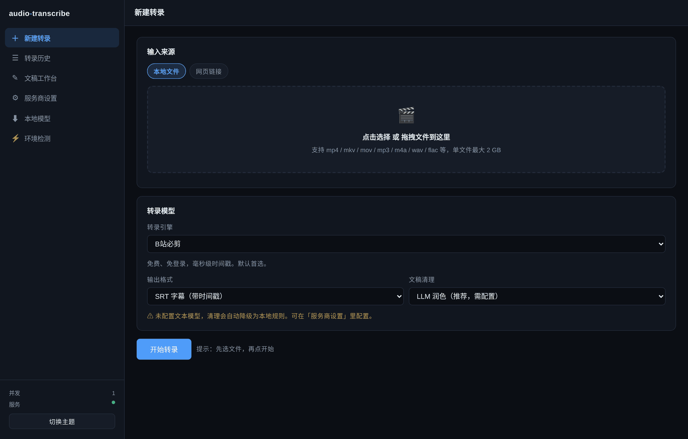
和命令行的差别
| 场景 | 命令行版 | Web 版 |
|---|---|---|
| 选参数 | 背 --engine / --clean / --format | 下拉框点选 |
| 看进度 | 盯着一行行 stderr | 四阶段进度条 + 可滚动日志 |
| 改错字 | 用编辑器打开文件改 | 边听边点时间戳跳转，就地改 |
| 找重点 | 通读全文 | 生成总结 / 对着文稿提问 |
| 校对效果 | 重跑一遍对比 | 润色结果并列显示，不覆盖原文 |
| 环境问题 | 自己看报错、自己 pip | 一键检测 + 一键修复 |
| 批量处理 | 写 shell 循环 | 一次拖多个文件 |
| 自动化 | 强：可塞进任何 pipeline | 只能用 HTTP API |
Web 版没有重写转录逻辑。它调用的是和命令行完全相同的 pipeline.py，连引擎实现都是同一份文件。所以你在命令行验证过的行为，在 Web 里一模一样。
它不做的事
- 没有登录鉴权。设计前提是「只给自己用」，默认只听
127.0.0.1，别的机器连不上 - 不保存你的 API Key。Key 只在你浏览器里，服务端用完即弃
- 不帮你绕过平台限制。要 Cookie 的平台还是得自己配，跟命令行版一样
1装之前，先检查环境
硬性前提两个：Python 3.10+ 和 ffmpeg。前者用 venv 装着更省心，后者必须系统安装。
1.1 检查 Python
# 看版本，需要 3.10 或更高 python3 --version # 输出示例 Python 3.13.5
如果 python3 --version 提示找不到命令，改用 python --version 或 py --version。本教程后面所有命令同理。
版本不够或没有 Python：
| 系统 | 安装命令 |
|---|---|
| macOS | brew install python@3.12 |
| Ubuntu / Debian | sudo apt update && sudo apt install python3.12 python3-venv python3-pip |
| Arch | sudo pacman -S python python-pip |
| Windows | 官网下载 python.org，安装时务必勾选 Add python.exe to PATH |
1.2 检查 ffmpeg
ffmpeg -version # 期望看到类似 ffmpeg version 7.1.5 Copyright (c) 2000-2026 the FFmpeg developers
没有的话按平台装：
| 系统 | 安装命令 |
|---|---|
| macOS | brew install ffmpeg |
| Ubuntu / Debian | sudo apt install ffmpeg |
| Arch | sudo pacman -S ffmpeg |
| Windows | winget install Gyan.FFmpeg |
就算系统没有 ffmpeg，启动后进「环境检测」页点修复，工具会下载一份静态二进制到 ~/.audio-transcribe/bin/，不需要 root 权限。这条路径在没法 sudo 的机器上特别有用。
1.3 检查 git（可选）
git --version
没有 git 也能装：直接在 GitHub 页面点 Code → Download ZIP，解压即可。
1.4 磁盘空间
不用本地模型的话，500 MB 绰绰有余。要下本地 whisper 模型的话，每个 1–3 GB，建议留 5 GB 以上。
2安装：三种方式，选一种
复制粘贴三条命令（推荐）
最简单，不需要懂 Python 环境管理。
# 1. 拿到代码 git clone https://github.com/weiyinerzui/audio-transcribe.git cd audio-transcribe # 2. 建一个独立环境（避免污染系统 Python） python3 -m venv .venv # 3. 装依赖 # macOS / Linux： source .venv/bin/activate # Windows PowerShell： # .venv\Scripts\Activate.ps1 pip install -r requirements-web.txt
新版 Debian / Ubuntu / Fedora 的系统 Python 有 PEP 668 保护，直接 pip install 会报 error: externally-managed-environment。用 venv 是最干净的解法——不用 --break-system-packages，也不用 sudo。
看到 (.venv) 出现在提示符前面，说明环境已激活。之后每次要用 Web 版，都要先 source .venv/bin/activate。
Docker（不想碰 Python 环境）
机器上有 Docker 就行，一条命令跑起来。
git clone https://github.com/weiyinerzui/audio-transcribe.git cd audio-transcribe docker build -t audio-transcribe . docker run --rm -p 127.0.0.1:8787:8787 -v at-data:/data audio-transcribe
写成 -p 8787:8787 会把端口暴露到整个局域网，而这工具没有鉴权。正确写法是 -p 127.0.0.1:8787:8787。详见 第 14 节。
让 agent 帮你装
你已经在用 Claude Code / Codex / OpenCode / pi 的话，把下面这段丢给它。
请帮我安装并启动 audio-transcribe 的 Web 版：
1. clone https://github.com/weiyinerzui/audio-transcribe.git 到合适目录
2. 用 python3 -m venv .venv 建虚拟环境并激活
3. 执行 pip install -r requirements-web.txt
4. 检查系统是否装了 ffmpeg（ffmpeg -version）；没有的话先
告诉我，不要擅自 sudo 安装
5. 启动：python web/server.py --no-browser
6. 用 curl http://127.0.0.1:8787/api/health 验证返回 {"ok":true}
7. 把访问地址和任何报错原文告诉我
注意：所有命令都要在虚拟环境内执行；不要修改系统 Python；
不要执行 sudo；遇到权限问题停下来问我。3第一次启动
python web/server.py
正常的话你会看到：
# 浏览器会自动打开 http://127.0.0.1:8787 INFO: Started server process [12345] INFO: Uvicorn running on http://127.0.0.1:8787 (Press CTRL+C to quit)
这个终端窗口不能关。关掉服务就停了。想后台常驻可以用 nohup python web/server.py --no-browser &，或者做成 systemd / launchd 服务。
3.1 常用参数
| 参数 | 作用 |
|---|---|
--port 9000 | 换端口（默认 8787） |
--concurrency 2 | 同时处理 2 个任务（默认 1） |
--no-browser | 不自动打开浏览器 |
--host 0.0.0.0 | ⚠ 对外开放，见第 14 节 |
3.2 验证服务活着
curl http://127.0.0.1:8787/api/health # 期望输出 {"ok":true,"queued":0}
3.3 启动报错怎么办
报 ModuleNotFoundError: No module named 'fastapi'
依赖没装，或者虚拟环境没激活。确认提示符前有 (.venv)，然后：
source .venv/bin/activate # Windows: .venv\Scripts\Activate.ps1 pip install -r requirements-web.txt
报 Address already in use
8787 被占了。换端口：python web/server.py --port 9000。
浏览器没自动打开
手动访问 http://127.0.0.1:8787。有些无桌面环境或远程服务器上打不开是正常的。
远程服务器上跑，本地浏览器打不开
用 SSH 端口转发（不要改成 --host 0.0.0.0）：
ssh -N -L 8787:127.0.0.1:8787 用户名@服务器地址
# 然后本地浏览器打开 http://127.0.0.1:87874第一次转录
目标：把一个音频文件变成 SRT 字幕。全程点鼠标，不敲命令。
4.1 选文件
在「新建转录」页，点击虚线框或直接把文件拖进去。支持： mp4mkvmov aviwebmflv mp3m4awav flacaacogg 一次可以选多个，会排队逐个处理。单文件上限 2 GB。
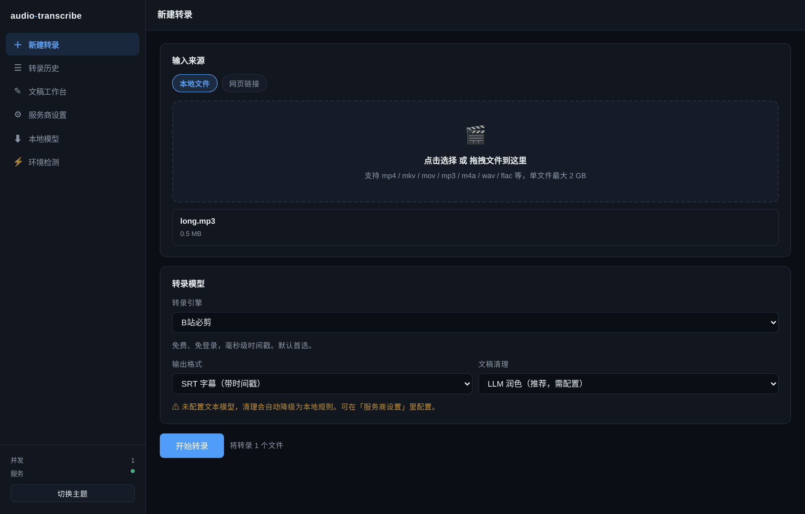
4.2 选引擎
默认是 B站必剪（bcut），免费、免登录、中文准、有毫秒级时间戳。第一次用别改，直接跑。
其他引擎什么时候用，见 第 9 节。
4.3 选格式和清理
| 输出格式 | 什么时候选 |
|---|---|
| SRT 字幕 | 要导入播放器、剪辑软件，或需要按时间定位 |
| TXT 文稿 | 只要阅读，不需要时间轴 |
| JSON 数据 | 要自己写程序处理分段和时间戳 |
| 文稿清理 | 什么时候选 |
|---|---|
| LLM 润色 | 效果最好，但需要先在「服务商设置」配好文本模型 |
| 本地规则 | 免费、离线、瞬间完成。能删语气词、折叠重复、修常见错字 |
| 不清理 | 要原始识别结果，自己后处理 |
选了「LLM 润色」但没配服务商，界面会提示「清理会自动降级为本地规则」，实际执行时也自动降级。 转录结果不会丢，只是少了 LLM 那层润色。这是刻意的容错设计。
4.4 开始
点蓝色的「开始转录」。下方会展开进度卡片，四阶段依次点亮：
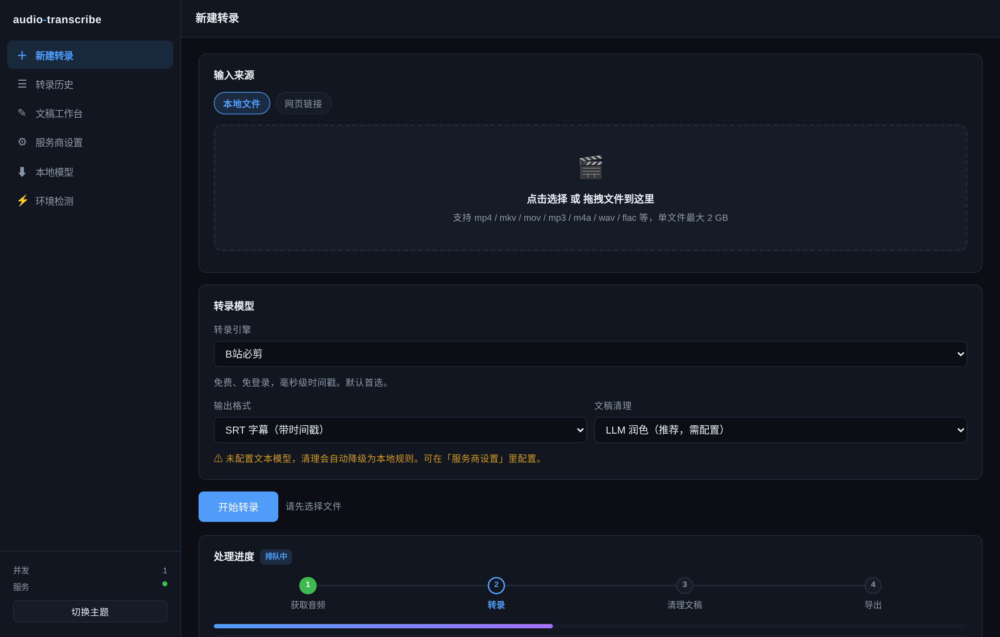
完成后：
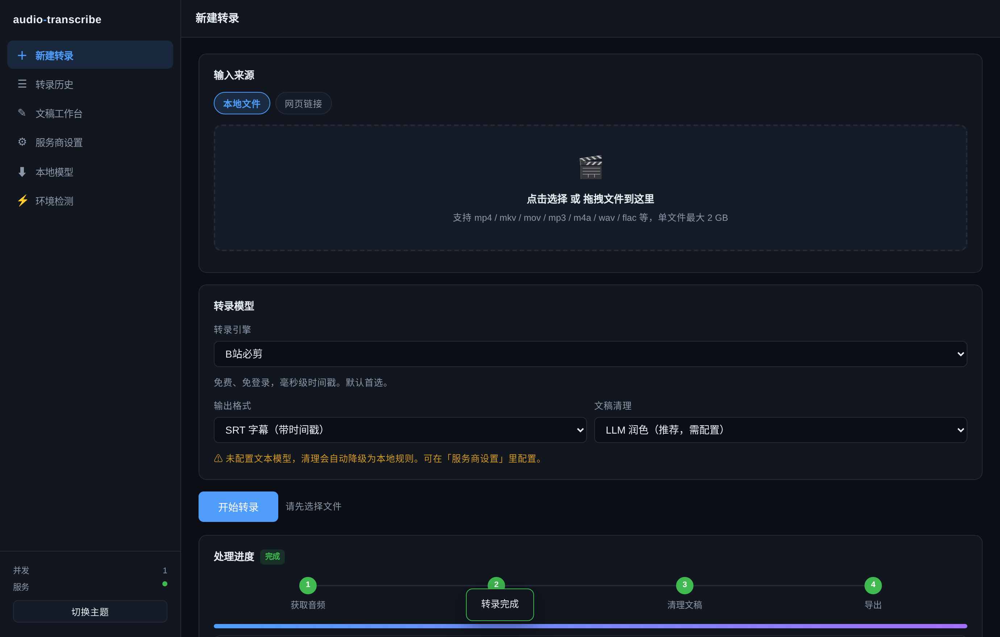
不用再去历史列表找。工作台里能听、能改、能导出、能问 AI。
5看懂进度与日志
5.1 四个阶段
| # | 阶段 | 在做什么 | 耗时 |
|---|---|---|---|
| 1 | 获取音频 | ffmpeg 抽音轨 / 链接下载 | 本地文件几秒；链接看网速 |
| 2 | 转录 | 调云端或本地引擎识别 | 最久，1 小时音频约 1–5 分钟 |
| 3 | 清理文稿 | LLM 逐段润色 / 本地正则 | 规则模式瞬间；LLM 模式按块走 |
| 4 | 导出 | 写文件 | 不到 1 秒 |
5.2 日志怎么读
任务已排队 开始处理 [1/3] 准备音频: /home/you/.audio-transcribe/uploads/3a8c12b3431c.mp3 [2/3] 转录中 (engine=bcut) … [3/3] 清理文稿 (mode=rules) … 正在写出结果… 完成：/home/you/.audio-transcribe/outputs/3a8c12b3431c.srt
用 LLM 清理时，第三阶段会持续报进度：清理第 3/25 块。这是分块粒度，不是卡住。
5.3 随时可以取消
点「取消任务」。取消是协作式的——在分块边界检查，不会硬杀进程，所以已产出的东西不会变成半截坏文件。
6配置文本服务商（润色 / 总结 / 问答要用）
不配也能用——只是这三项 AI 功能不可用，转录本身完全不受影响。
6.1 打开设置页
左侧「服务商设置」。第一次进来是空的，给了四个预设：
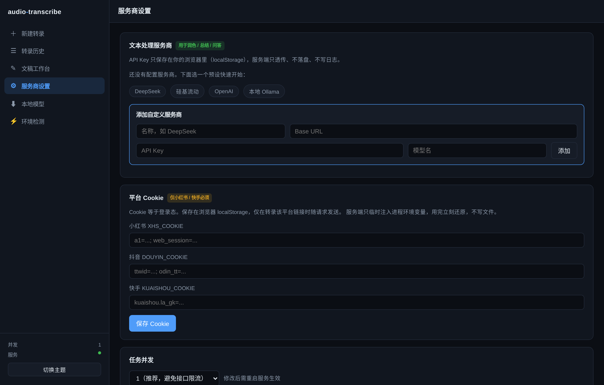
| 预设 | Base URL | 适合谁 |
|---|---|---|
| DeepSeek | https://api.deepseek.com/v1 | 中文强、便宜，性价比最高，推荐 |
| 硅基流动 | https://api.siliconflow.cn/v1 | 国内直连，有免费额度 |
| OpenAI | https://api.openai.com/v1 | 需能访问 OpenAI |
| 本地 Ollama | http://127.0.0.1:11434/v1 | 完全离线，key 随便填 |
6.2 填 Key 并测试
点预设 → 在 API Key 框里粘上你的 key → 点「测试」。
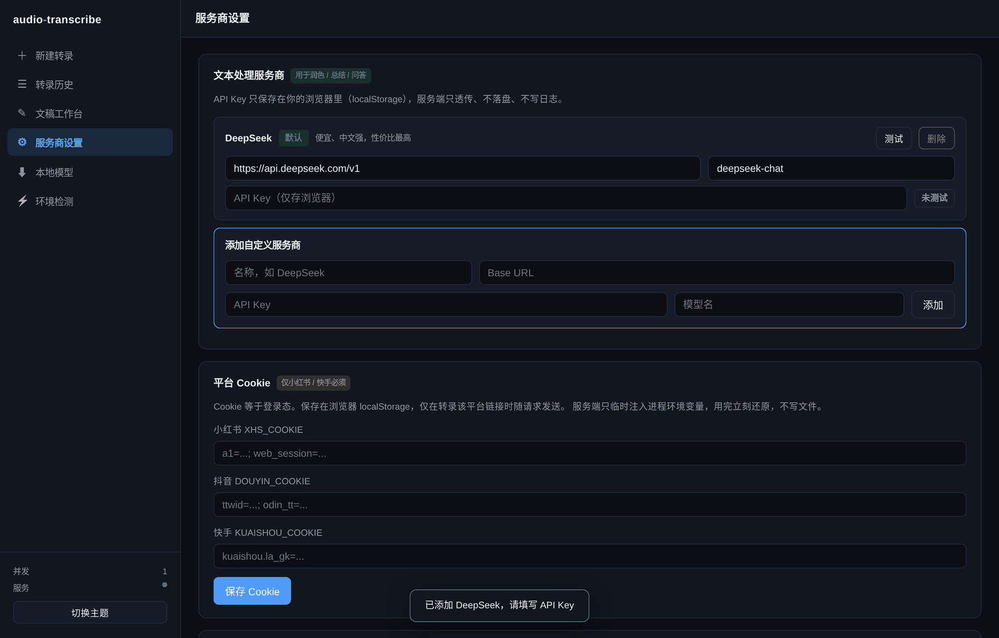
它向 /chat/completions 发一条 回复 OK 的短消息。失败会显示真实 HTTP 状态码和响应体，比如 401 就说明 key 填错了，404 多半是 Base URL 少了 /v1。别猜，直接看它说什么。
6.3 自己加服务商
任何 OpenAI 兼容的服务都能加：在底部「添加自定义服务商」填名称、Base URL、Key、模型名即可。
6.4 多个服务商怎么切
第一个添加的自动成为「默认」。其他的显示「备用」，点「设为默认」切换。润色、总结、问答都用当前默认的那个。
7文稿工作台：听、改、导
从历史列表点「查看」，或转录完成后点「查看结果」，进入工作台。
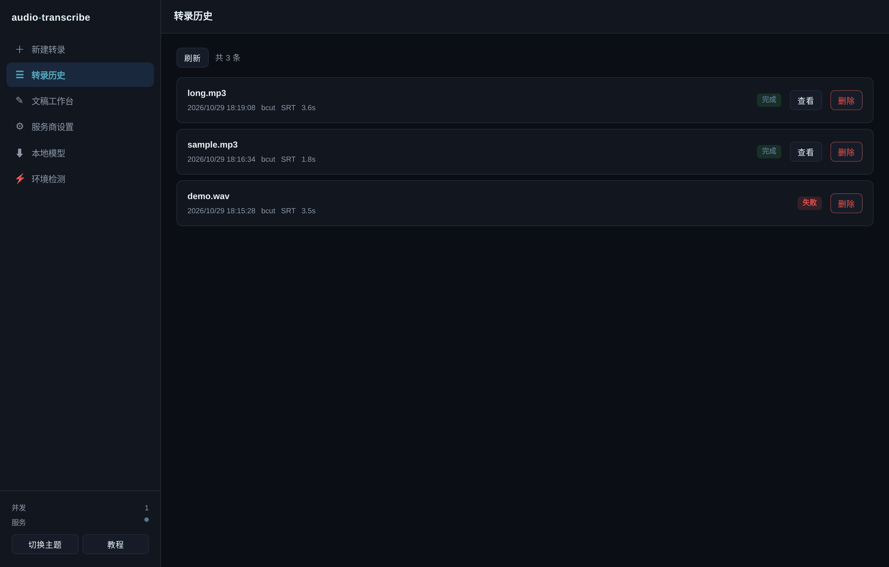
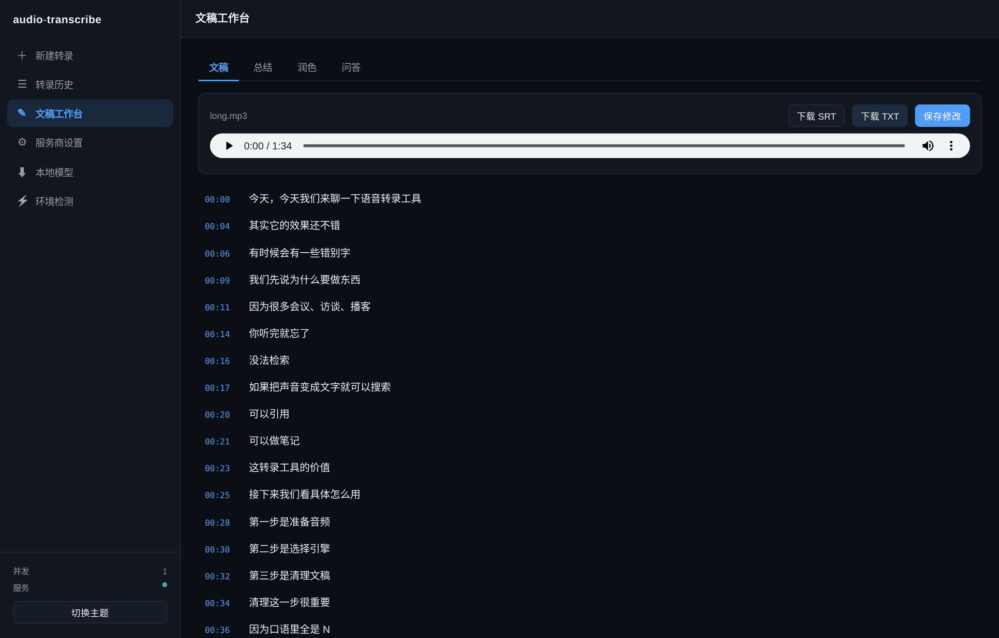
7.1 播放器与高亮
- 点任意时间戳，播放器跳到那一句
- 播放时当前句自动高亮，跟着音频走
- 适合校对：听一句、看一眼、改一处
从网页链接转录的任务，原始媒体在转录后就清理了，所以播放器不可用，界面会明确提示。文字稿和编辑功能不受影响。要边听边改的话，用本地文件转录。
7.2 在线编辑
直接点任意一句话就能改。改完点右上角「保存修改」写回文件。
只改文字，时间戳原样保留。所以你可以放心大改，SRT 依然是合法的。
7.3 导出
右上角两个按钮：
- 下载 SRT —— 带时间戳的字幕
- 下载 TXT —— 纯文字稿
编辑后导出的是改过的版本，不是原始转录。
8总结 · 润色 · 问答
工作台顶部四个标签页：文稿 / 总结 / 润色 / 问答。后三个需要先配好文本服务商。
8.1 总结
点「生成总结」，输出结构化内容：一句话概括 → 核心要点（带时间戳）→ 值得记录的原话 → 行动项（如果原文涉及）。
超过 1.2 万字的文稿不会硬塞。系统先按段落分块摘要压缩，再基于摘要生成总结。所以 3 小时的访谈也能出总结，不会因为超上下文而失败。
8.2 润色（三档）
| 强度 | 做什么 |
|---|---|
| 轻度 | 只删语气词（嗯、啊、那个、就是）和口吃重复，其余一字不改 |
| 中度 | 删语气词 + 修明显同音错字和语病，保持口语风格 |
| 重度 | 整理为通顺书面表达，合并碎片句，可调语序，但不增删事实 |
结果并列显示在下方，带「复制」按钮。想用就复制走，不想用原文还在。这样你可以放心试重度，不满意再试轻度。
8.3 问答
就这份文稿提问，回答里的 [00:12:34] 是可点的，点了播放器跳过去。
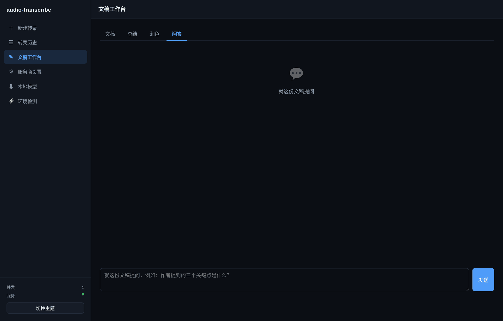
怎么做到长文稿也能问：
| 文稿长度 | 策略 |
|---|---|
| ≤ 8,000 字 | 全文直接送给模型 |
| 8,000 – 50,000 字 | BM25 检索出最相关的 30 段再送 |
| > 50,000 字 | 先逐段摘要压缩，再基于摘要回答 |
BM25 是经典的关键词相关性算法，纯 Python 约 40 行就能实现。不需要向量数据库，不需要 embedding 的 API key，零额外依赖。对「找原文里讲过什么」这类任务，效果足够好，且完全离线可算。
8.4 快捷键
问答输入框里 Ctrl+Enter（macOS 是 ⌘+Enter）发送。
9转录模型怎么选
界面里六个引擎，选的时候看三个维度：要不要 key、有没有时间戳、跑在云上还是本地。
| 引擎 | 要 key | 时间戳 | 说明 |
|---|---|---|---|
| B站必剪 | 不要 | ✅ | 默认首选。免费、免登录、中文准、毫秒级时间戳 |
| 剪映 | 不要 | ✅ | 免费，但依赖第三方签名服务，可能随时失效 |
| 硅基流动 | 要 | ❌ | Qwen3-ASR，只返回整段文本。选它时 SRT 会被自动禁用 |
| OpenAI Whisper 兼容 | 要 | ✅ | 任意兼容 /audio/transcriptions 的服务：OpenAI、Groq、硅基流动、自建 |
| faster-whisper | 不要 | ✅ | 本地推理，跨平台。有 GPU 自动用 CUDA |
| MLX Whisper | 不要 | ✅ | 本地推理，仅 Apple Silicon |
9.1 界面会主动拦住你
两处防呆设计：
- 选硅基流动时，输出格式里的「SRT 字幕」会变灰不可选，并自动切到 TXT —— 因为它没时间戳，出 SRT 就是坏字幕
- 在非 Mac 机器上，MLX Whisper 直接显示为禁用，并在引擎说明里写明「仅支持 darwin，当前是 linux」—— 不是隐藏，而是明确告诉你为什么不能用
藏起来的话，Mac 用户会以为这功能不存在；Linux 用户看到别人的截图会疑惑「我为什么没有」。显示出来 + 写明原因，两边都不困惑。
9.2 决策建议
| 你的情况 | 选这个 |
|---|---|
| 第一次用，想快点跑通 | B站必剪 |
| 必剪挂了 | 剪映 → 还不行就 OpenAI Whisper 兼容 |
| 只要文字，不要时间轴 | 硅基流动（通常更快更便宜） |
| 有 Groq key | OpenAI Whisper 兼容 + whisper-large-v3-turbo，速度极快 |
| 敏感内容不能上传云端 | faster-whisper 本地跑 |
| M 系列 Mac，想最快 | MLX Whisper |
9.3 OpenAI Whisper 兼容引擎怎么填
选它之后会展开「ASR 服务配置」卡片，填三项：
| 字段 | OpenAI 官方 | Groq |
|---|---|---|
| Base URL | https://api.openai.com/v1 | https://api.groq.com/openai/v1 |
| API Key | sk-... | gsk_... |
| 模型名 | whisper-1 | whisper-large-v3-turbo |
ASR 服务配置是一次性的，刷新页面就没了。要反复用同一个服务，建议在环境变量里配好（OPENAI_ASR_BASE_URL / OPENAI_ASR_API_KEY / OPENAI_ASR_MODEL），启动服务时读进去。
10本地模型下载
想让转录完全离线、不上传任何音频到云端，就用本地引擎。先下模型。
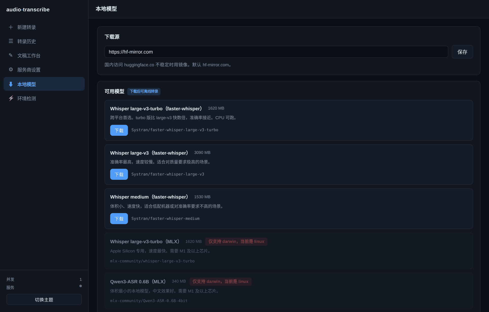
10.1 五个可选模型
| 模型 | 大小 | 平台 | 适合 |
|---|---|---|---|
| whisper large-v3-turbo (faster-whisper) | 1.6 GB | 全平台 | 推荐，速度与质量平衡最好 |
| whisper large-v3 (faster-whisper) | 3.0 GB | 全平台 | 要最高质量，慢一些 |
| whisper medium (faster-whisper) | 1.5 GB | 全平台 | 机器弱、要省资源 |
| whisper large-v3-turbo (MLX) | 1.6 GB | 仅 Apple Silicon | M 系列 Mac，比 faster-whisper 快 2–4 倍 |
| Qwen3-ASR 0.6B (MLX) | 340 MB | 仅 Apple Silicon | 中文，体积小，Mac 上轻量选择 |
10.2 下载源
默认走 hf-mirror.com（HuggingFace 国内镜像，可直连）。想换的话在页面顶部改。下载慢就换镜像，别干等。
10.3 下完之后
- 模型存在
~/.audio-transcribe/models/ - 回到「新建转录」，引擎选 faster-whisper（或 MLX）
- 开始转录 —— 这时候断网也能跑
下模型只是拿到权重文件，还缺推理库。去「环境检测」页，找到 faster-whisper 这一项点「修复」，或手动 pip install faster-whisper。MLX 需要 pip install mlx-whisper（仅 Apple Silicon）。
11环境检测与一键修复
左侧「环境检测」。这一页会检查 11 到 13 项（取决于 bilibili-api 装没装），缺什么一目了然。
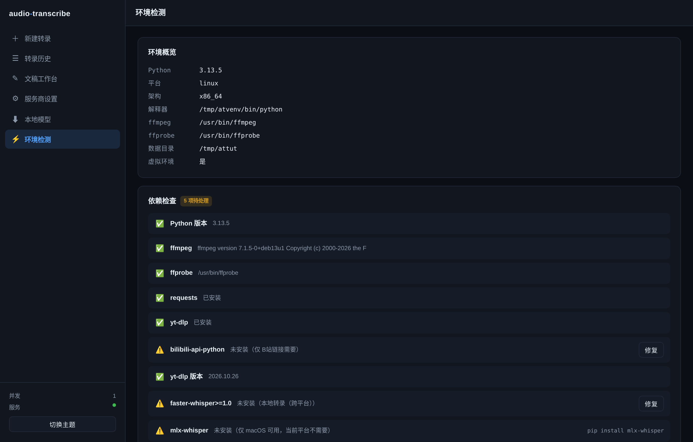
11.1 检查哪些项
| 类别 | 具体项 |
|---|---|
| 运行时 | Python 版本、平台、架构、解释器路径、是否在虚拟环境 |
| 系统工具 | ffmpeg、ffprobe |
| 核心依赖 | requests、yt-dlp、bilibili-api-python |
| B站请求库 | curl_cffi / httpx / aiohttp 至少有一个 |
| yt-dlp 新旧 | 超过 180 天未更新会提醒（平台接口变得快） |
| 可选后端 | faster-whisper、mlx-whisper、huggingface_hub |
| 资源 | 磁盘剩余空间 |
11.2 三级处理策略
只读检测
随时可跑，不改变任何东西。告诉你「现在什么状态」。
一键修复
点按钮才执行。pip 装依赖、升级 yt-dlp、下载 ffmpeg 静态二进制。都在用户目录内，不碰系统。
只给命令
需要系统权限的（apt / brew / winget），只显示命令，绝不替你执行 sudo。你自己决定装不装。
11.3 一键修复全部
点「一键修复可修复项」，会依次处理所有可自动修的项，日志实时打在下方。
修复动作执行完会重新检测一遍，页面自动刷新状态。不用手动点「重新检测」。
11.4 一个真实的坑：B站请求库
bilibili-api-python 从 17.x 版本起不再自带请求库。装完 bilibili-api 后去转录 B 站链接，会报：
ArgsException: 尚未安装第三方请求库或未注册自定义第三方请求库。
$ pip3 install (curl_cffi|httpx|aiohttp)遇到这个不用查文档，直接去「环境检测」页，找到 「B站请求库」 这一项点修复。它会装 curl_cffi（自带 TLS 指纹，最不容易被风控）。
12网页链接与 Cookie
12.1 哪些平台要 Cookie
| 平台 | 免 Cookie | 说明 |
|---|---|---|
| B站 bilibili.com / b23.tv | ✅ | 走官方 API 取音频流，支持分 P |
| YouTube | ✅ | 需要能访问 YouTube |
| 微博 | ✅ | |
| 抖音 | 建议配 | 不配也能试，风控严时会失败 |
| 小红书 | ❌ 必须 | 没 Cookie 直接拒绝 |
| 快手 | ❌ 必须 | 没 Cookie 直接拒绝 |
12.2 贴链接转录
「新建转录」页切到「网页链接」，把地址粘进去即可。B站支持 b23.tv 短链和 ?p=3 分P 参数。
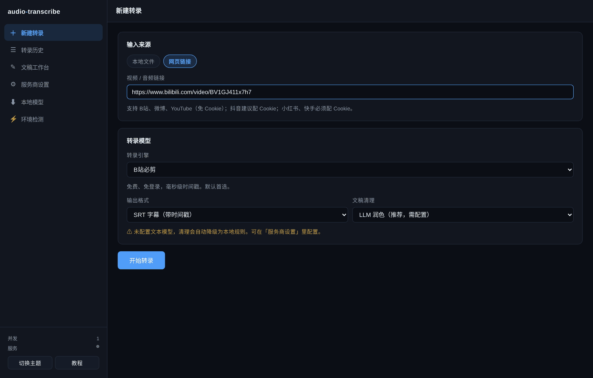
12.3 怎么配 Cookie
「服务商设置」页 → 往下滚到「平台 Cookie」→ 三个输入框对应三个平台 → 保存。
Cookie 的获取方式：浏览器登录该平台 → 按 F12 打开开发者工具 → Network 标签 → 刷新页面 → 点任意请求 → 复制 Request Headers 里的 Cookie 整行。
拿到你 Cookie 的人可以以你的身份操作该平台。所以：
- 不要截图分享带 Cookie 的界面
- 不要粘到公开的 issue / 聊天群
- 用完可以在平台改密码或退出登录，Cookie 就失效了
存在你的浏览器 localStorage，和 API Key 一样。服务端只在转录该平台链接时临时用一下，用完立刻还原，不写任何文件。
13API Key 到底存在哪
这可能是你最关心的问题。直接说结论：
服务端不读任何配置文件里的 key，不写任何 key 到磁盘，不记任何含 key 的日志。用完即弃。
13.1 数据流
浏览器 localStorage 服务端内存 第三方 API
┌──────────────────┐ ┌───────────────┐ ┌──────────────┐
│ {base_url, model, │─────▶│ 本次请求期间 │─────▶│ OpenAI 兼容 │
│ api_key} │ │ 持有，用完丢 │ │ 服务商 │
└──────────────────┘ └───────────────┘ └──────────────┘
▲ │
│ ✗ 不写文件
│ ✗ 不写日志
└── 只在这里，域名隔离 ✗ 不存数据库
13.2 磁盘上到底有什么
~/.audio-transcribe/ 里只有这些：
| 路径 | 内容 |
|---|---|
tasks.json | 任务历史：文件名、状态、耗时、参数。不含任何密钥 |
outputs/ | 转录产物 |
uploads/ | 上传的原始媒体（供播放器用） |
models/ | 下载的本地模型 |
bin/ | 下载的 ffmpeg 静态二进制 |
13.3 这三条限制要知道
- 浏览器配置共享：localStorage 按域名隔离，但同一台机器的同一个浏览器配置文件是共享的。公用电脑上用完建议清理浏览器数据。
- 只用 http，不是 https：因为只监听
127.0.0.1，流量不出本机，所以没做 TLS。如果哪天你用端口转发给别的机器访问，链条上其他环节记得自己加 TLS。 - 没有鉴权：任何能访问
127.0.0.1:8787的进程都能用这个服务。在本机上这是合理的（本来就是你的机器），但不要暴露到公网。
14Docker 部署
docker build -t audio-transcribe .
docker run --rm -p 127.0.0.1:8787:8787 -v at-data:/data audio-transcribe14.1 为什么左边必须是 127.0.0.1
Dockerfile 里容器内的服务监听 0.0.0.0 —— 这是正确的，因为容器网络和宿主机是隔离的，容器内只听回环的话宿主机就够不到。
真正的暴露面由宿主机侧的端口绑定决定：
| 写法 | 效果 |
|---|---|
-p 127.0.0.1:8787:8787 | ✅ 只有本机能访问 |
-p 8787:8787 | ❌ 绑定 0.0.0.0，整个局域网都能访问 |
等于把你的 API Key 使用额度、你的平台 Cookie 登录态，交给任何能扫到这个端口的人。不要这么做。
14.2 数据持久化
-v at-data:/data 把任务历史、转录产物、下载的模型都存在 Docker 卷里。容器删了数据还在。
14.3 容器里的可选组件
镜像默认装好了 ffmpeg 和 Web 依赖，但没装本地转录后端（体积太大）。需要离线转录的话，改 Dockerfile 取消这行注释后重新构建：
# RUN pip install faster-whisper huggingface_hub14.4 确实要给别的机器用怎么办
加一层自己的防护，三选一：
| 方式 | 怎么做 |
|---|---|
| SSH 端口转发 | ssh -L 8787:127.0.0.1:8787 user@host，最简单最安全 |
| Nginx Basic Auth | 反代加一层用户名密码 |
| Cloudflare Tunnel + Access | 套一层身份认证 |
15常见问题
启动相关
报 ModuleNotFoundError: No module named 'fastapi'
依赖没装或虚拟环境没激活。source .venv/bin/activate 后 pip install -r requirements-web.txt。
报 Address already in use
端口被占。python web/server.py --port 9000。
浏览器打不开页面，但终端没报错
手动访问 http://127.0.0.1:8787。远程服务器上则是端口转发没配对。
转录相关
一直卡在「获取音频」
链接类任务在下载。大文件几分钟正常。超过 10 分钟建议取消，检查网络。
报「转录结果为空」
音频里没人声（纯音乐、纯噪声），或者引擎没识别出内容。换个引擎试试。
SRT 变灰选不了
当前引擎没有时间戳（通常是硅基流动）。要么换引擎，要么接受 TXT。
提示「清理已降级为本地规则」
没配文本模型，或模型服务暂时不可用。转录结果没丢，只是少了 LLM 润色。
B站链接报 ArgsException: 尚未安装第三方请求库
去「环境检测」页点「B站请求库」那项的修复，或手动 pip install curl_cffi。
播放器相关
播放器不见了
链接类任务的原始媒体在转录后已清理。用本地文件转录才能边听边改。
上传目录被清空了
删除任务时会连带删掉上传文件。这是设计行为，不然磁盘会被撑爆。
性能相关
转录很慢
云端引擎取决于服务商排队。想快就换本地引擎（下好模型后），或给云端服务配更好的 key 等级。
能同时跑多个任务吗
能，但要显式开启：python web/server.py --concurrency 3。默认是 1，因为多数云转录接口有限流，并发反而更慢。
上传大文件报 413
超了 2 GB 上限。改 AT_MAX_UPLOAD_MB 环境变量，或先用 ffmpeg 压一下。
模型下载
下载卡住不动
换下载源。页面顶部把 hf-mirror.com 改成别的镜像，或挂代理后用 huggingface.co。
下完了但转录报错说没有模型
推理库没装。去「环境检测」页修 faster-whisper。
16速通清单
只想快点跑起来，照这个做，8 分钟：
装
git clone https://github.com/weiyinerzui/audio-transcribe.git cd audio-transcribe python3 -m venv .venv source .venv/bin/activate # Windows: .venv\Scripts\Activate.ps1 pip install -r requirements-web.txt
起
python web/server.py
浏览器自动打开 http://127.0.0.1:8787。
转
拖一个音视频文件进虚线框 → 引擎保持默认「B站必剪」→ 清理选「本地规则」→ 点「开始转录」。
看
完成后点「查看结果」→ 播放器 + 文稿 → 点时间戳试听 → 改个字 → 保存 → 下载 SRT。
（可选）配 AI
「服务商设置」→ 点 DeepSeek 预设 → 粘 key → 测试 → 回工作台试「总结」和「问答」。
剩下的都是锦上添花。环境检测、本地模型、Docker 部署这些，等你真的需要了再回来看对应章节。
audio-transcribe Web 版教程 · v1.3.0
命令行版教程 ·
GitHub ·
Markdown 版